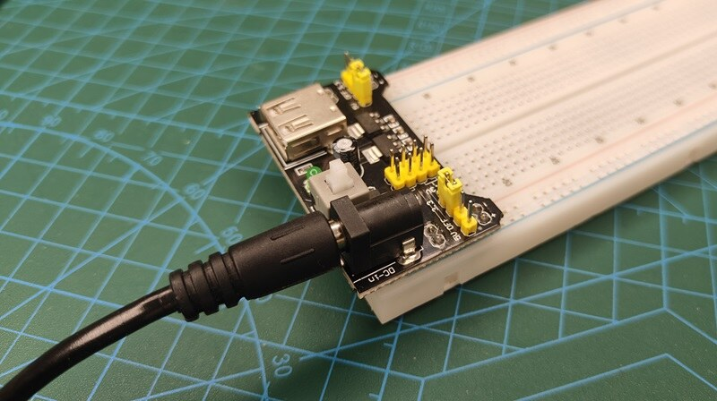
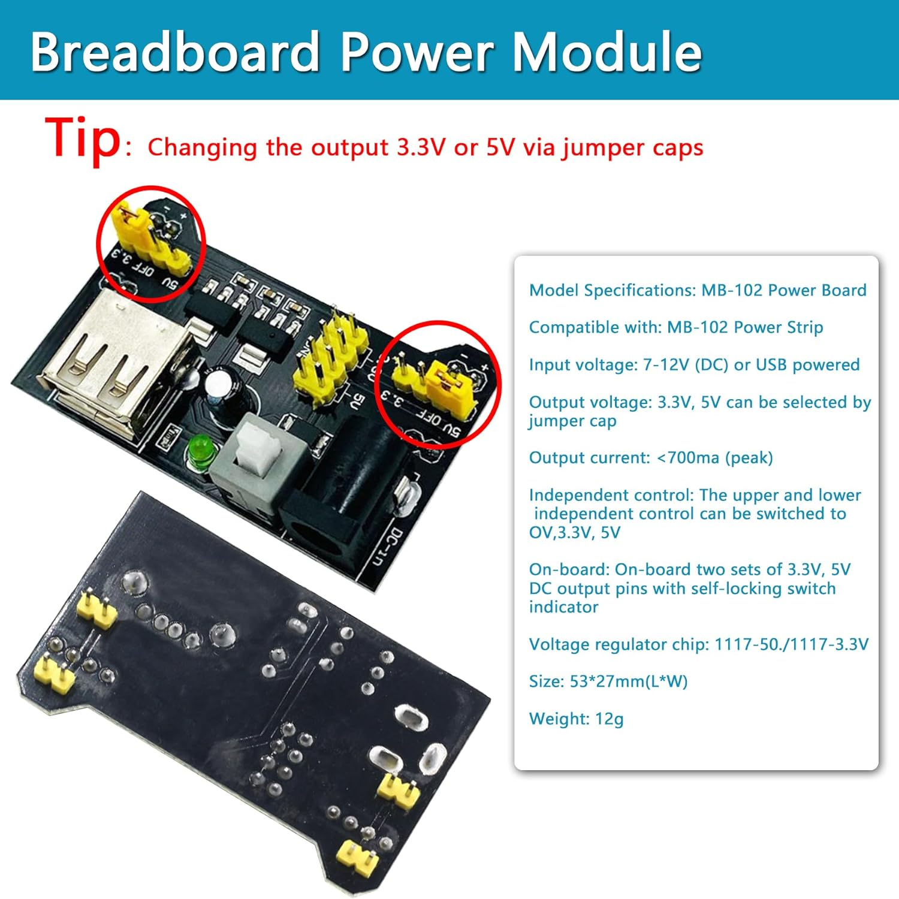
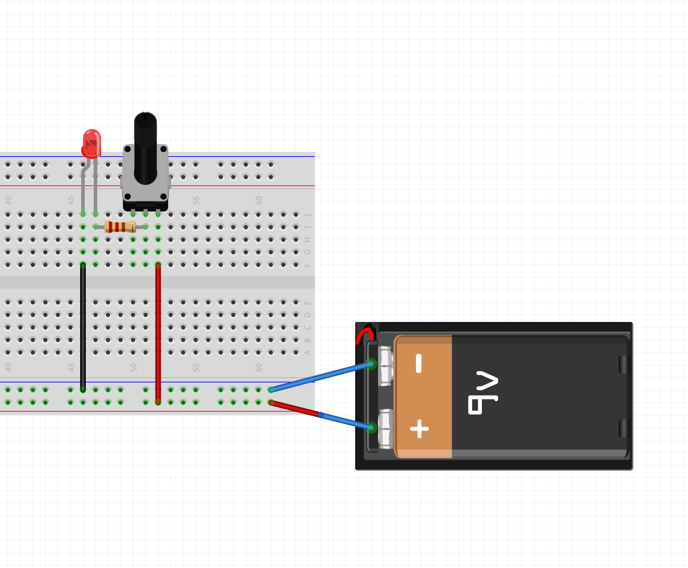
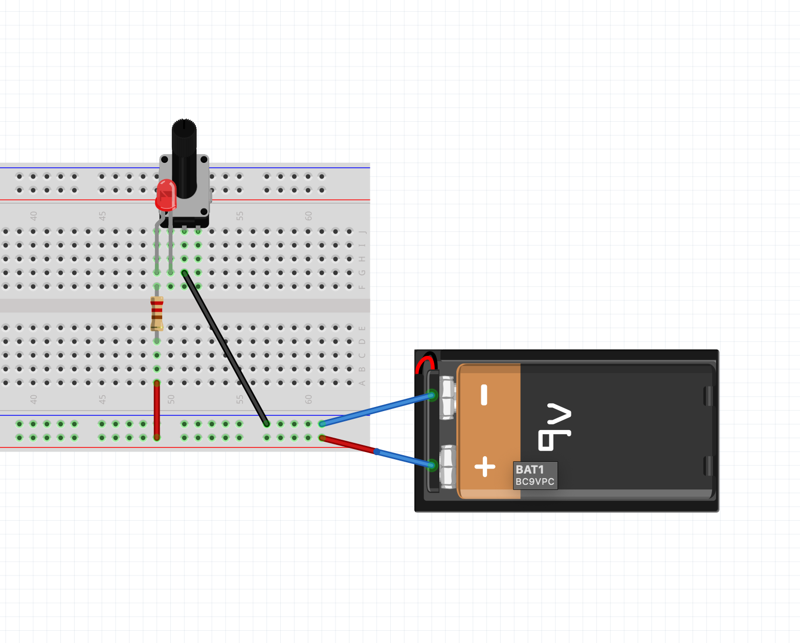
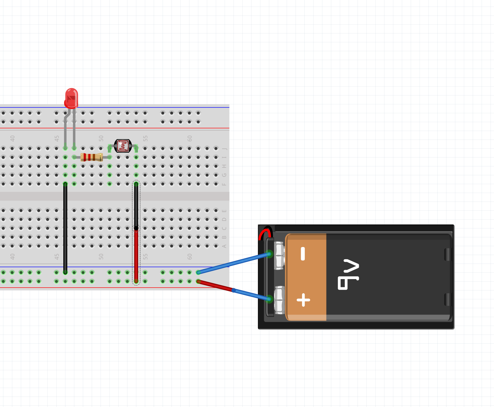

This is our first time building on a breadboard, so we can put circuits together without soldering. We’ll get to know the parts in our new electronics kit, power the breadboard, and build three quick circuits: an LED dimmed by a potentiometer, an LED controlled by a light sensor, and a buzzer with a volume knob.
The potentiometer and the light sensor are both variable resistors: parts whose resistance changes, which changes how much current flows. In the next workshop, the DIY Pressure Sensor, we’ll make our own variable resistor out of Velostat and drop it into the same circuit.
[We will go over the steps together as a class].
From your electronics kit:
A breadboard lets you connect components by pushing their legs into holes. Underneath the holes are metal strips that connect certain holes together.
Two components are connected when their legs are in the same row (or the same rail).
The Makeability Lab has a good visual guide: Breadboards.
The power supply module takes the 9V from the adapter and turns it into a steadier 5V or 3.3V for the breadboard.
Check the voltage jumpers. The module has a small jumper cap on each side that selects the voltage for that side’s rail. Set both to 5V. Look at the red circles in the image below.

Plug the module into one end of the breadboard so its pins go into the power rails. Line up the module’s + and – markings with the red + and blue – rails. Getting this backwards can damage components.
Plug the 9V adapter into the module’s barrel jack (like in the photo at the top of this page), then into the wall. Only use one power source at a time: the adapter or USB, not both.
Press the module’s power button. Its small LED should light up.
Turn the power off (press the button again) whenever you’re changing wires.
A potentiometer (“pot”) is a resistor you can adjust with a knob. It has three legs: the two outer legs are the ends of a resistor, and the middle leg (the wiper) slides along it as you turn the knob. Using the middle leg and one outer leg gives you a resistance that changes as you turn.
5V (+) → potentiometer → 220Ω resistor → LED → GND (–)

Another way of wiring it (There are many right answers):

With the power off:
Why the resistor? At one end of the knob, the pot’s resistance is close to 0Ω. The 220Ω resistor makes sure there’s always enough resistance in the loop to protect the LED. Keep it in every LED circuit.
A photoresistor (also called a light-dependent resistor, or LDR) changes its resistance with light. More light = less resistance, so more current flows and the LED gets brighter. It has no polarity, so either leg can go either way.
5V (+) → photoresistor → 220Ω resistor → LED → GND (–)

This is the same circuit as Part 3, with the photoresistor in place of the potentiometer:
In normal room light the LED may only glow faintly. That’s expected: the photoresistor still has a fairly high resistance until you shine a bright light on it.
The active buzzer in your kit makes a beep on its own whenever it gets power. No extra parts are needed to make a sound. It does have polarity: the longer leg (or the leg marked + on top) goes toward power.
Make sure you have the active buzzer. It has a sticker on top and a sealed black bottom. If your kit also has a buzzer with a green circuit board visible underneath, that’s a passive buzzer. It needs a changing signal to make a tone, so on its own it will only click. We’ll use it with Arduino later.
First, just make it beep:
Now add the potentiometer as a volume knob:
5V (+) → potentiometer → buzzer → GND (–)
The buzzer is rated for 5V, so it doesn’t need the 220Ω resistor.
Try it: swap the potentiometer for the photoresistor. Can you make a buzzer that only sounds when a light shines on it?
Continue with the DIY Pressure Sensor Workshop, where you’ll build a pressure sensor out of Velostat and use it in these same circuits.